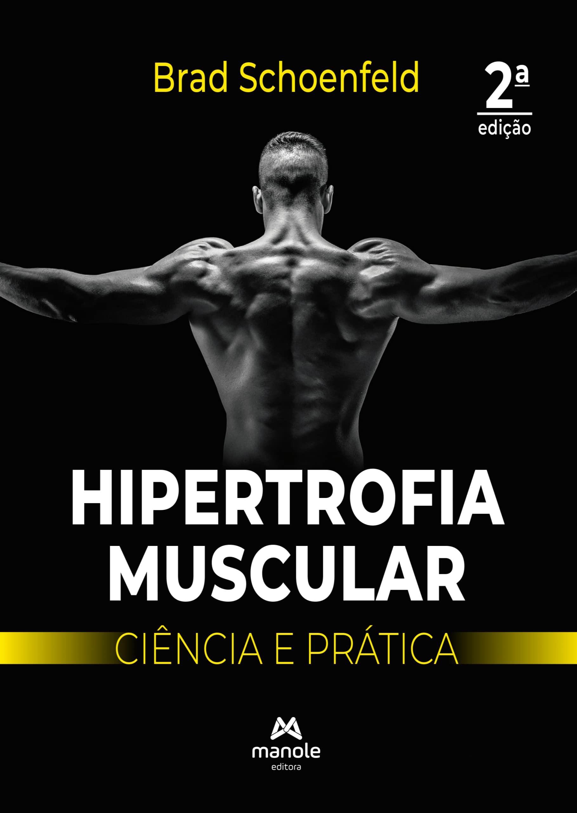

Hipertrofia Muscula Ciência e prática
A hipertrofia muscular é o aumento do tamanho das fibras musculares, resultante de estímulos de sobrecarga de treinamento e uma dieta adequada. O processo científico envolve microlesões nas fibras musculares durante o treino, que são reparadas e aumentam de tamanho através da síntese proteica. Para a prática, é necessário combinar treino de força com sobrecarga progressiva (aumento de carga, volume ou intensidade), nutrição rica em proteínas e calorias suficientes, e descanso adequado para permitir a recuperação e o crescimento.
Onde comprar ← Voltar para Esportes